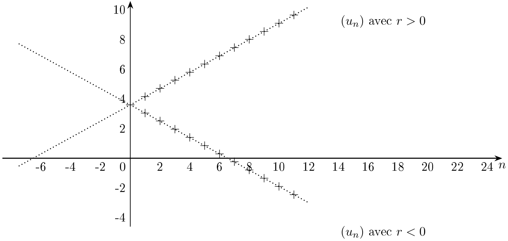
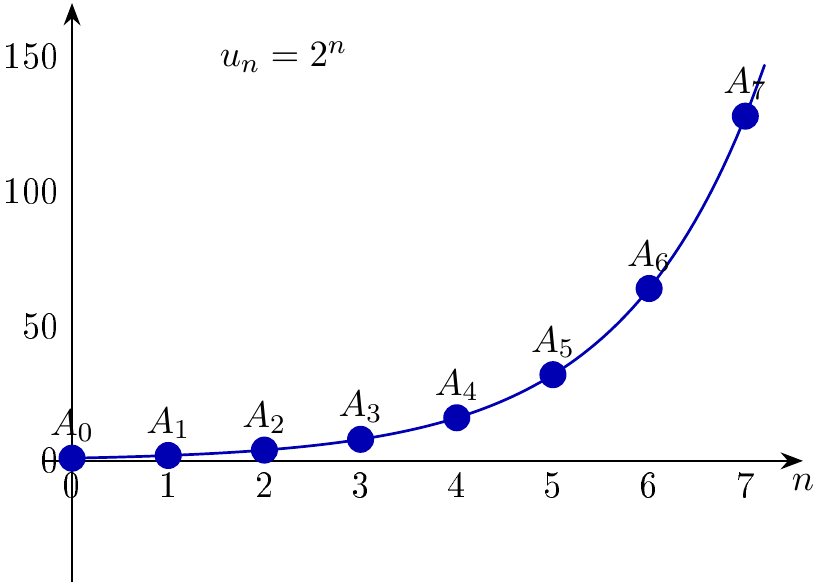
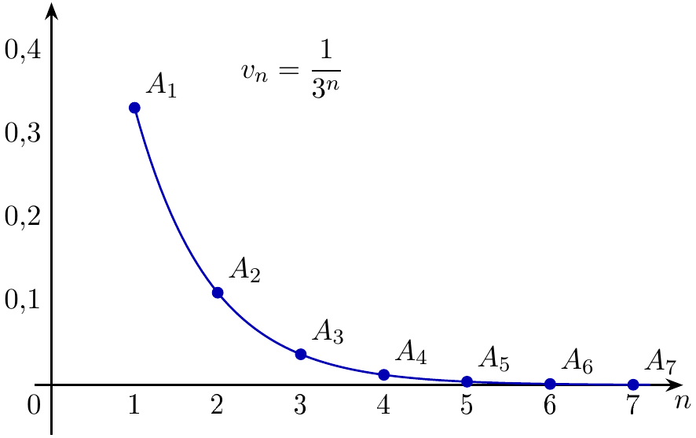
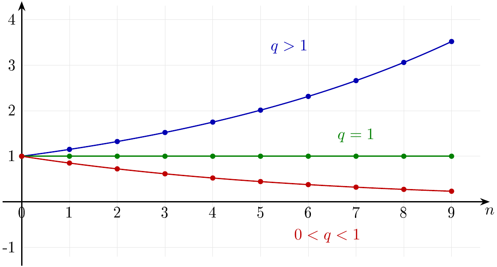

Chapitre II : Les suites arithmétiques et géométriques
Première STMG · Chapitre 2 — Suites arithmétiques et géométriques · cours de Frederik de Peyrelongue
I. Suites arithmétiques
Une suite $(u_{n})$ est arithmétique si, pour passer d'un terme au suivant, on ajoute le même nombre $r$, qu'on appelle la raison de la suite :
Soit la suite $(u_{n})$ définie pour tout $n$ par $u_{n}=3n+5$.
Calculer $u_{1}$, $u_{2}$, $u_{3}$. La suite $u_{n}$ est-elle arithmétique ? Si oui, quelle est sa raison ?
Soit la suite $(u_{n})$ définie pour tout $n$ par $u_{n+1}=u_{n}^{2}+3$ et $u_{0}=1$.
Calculer $u_{1}$, $u_{2}$, $u_{3}$. La suite $u_{n}$ est-elle arithmétique ?
Si $u_{n}$ est une suite arithmétique de raison $r$, alors, pour tout $n$,
Représentation graphique

- Si une suite est arithmétique, elle est représentée par un nuage de points alignés.
- Si une suite est représentée par un nuage de points alignés, alors la suite est arithmétique.
Sens de variation de la suite arithmétique
Soit $(u_{n})$ une suite arithmétique de raison $r$ :
- si $r>0$, alors la suite est strictement croissante ;
- si $r<0$, alors la suite est strictement décroissante ;
- si $r=0$, alors la suite est constante.
$u_{n+1}-u_{n}=r>0$, donc $u_{n+1}>u_{n}$ pour tout $n$. Et, par définition, la suite est donc croissante.
Si $r<0$, on a, pour tout indice $n$, $u_{n+1}-u_{n}=r<0$, donc $u_{n+1}<u_{n}$ pour tout $n$. Et, par définition, la suite est donc décroissante.
- Pour prouver qu'une suite est arithmétique, on doit calculer la différence $u_{n+1}-u_{n}$. Si la différence est constante pour tout indice $n$, alors la suite est arithmétique.
- Pour prouver qu'une suite n'est pas arithmétique Un contre-exemple suffit si $u_2-u_1\neq u_1-u_0$ La différence n'est pas constante, alors la suite n'est pas arithmétique.
II. Suites géométriques
Une suite $u_{n}$ est une suite géométrique si, pour passer d'un terme au suivant, on multiplie toujours par le même nombre $q$, qu'on appelle la raison de la suite. On a ainsi :
Soit la suite $(u_{n})$ définie par $u_{0}=5$ et, pour tout $n\geqslant 1$, $u_{n}=5\times 2^{n}$.
Calculer $u_{1}$, $u_{2}$, $u_{3}$. La suite $u_{n}$ peut-elle être géométrique ? Si oui, le montrer et donner sa raison $q$.
Soit la suite $(u_{n})$ définie pour tout $n\geqslant 0$ par $u_{n}=3^{n}$.
Calculer $u_{1}$, $u_{2}$, $u_{3}$. La suite $u_{n}$ peut-elle être géométrique ? Si oui, le montrer et donner sa raison $q$.
Représentation graphique


- Si une suite est géométrique, elle est représentée par un nuage de points exponentiels.
- Si une suite est représentée par un nuage de points exponentiels, alors la suite est géométrique.
Remarque : contrairement à une droite, il est difficile de prouver que le nuage de points est exponentiel ; il faudra utiliser un outil de linéarisation : le logarithme (c'est pour plus tard).
Sens de variation d'une suite géométrique
Soit $(u_{n})$ une suite géométrique de raison $q$ et de premier terme strictement positif :
- si $q>1$, alors la suite est strictement croissante ;
- si $0<q<1$, alors la suite est strictement décroissante ;
- si $q=1$, alors la suite est constante.

III. Notion de limite d'une suite
Soit la suite $(u_{n})$ définie par $u_{n}=\dfrac{n-1}{n^{2}+1}$.
- Calculer $u_{10}$, $u_{100}$, $u_{10\,000}$.
- Quel semble être le comportement des termes $u_{n}$ lorsque $n$ devient très grand ?
IV. Python et les suites
L'informatique est un bon outil pour modéliser les suites définies par récurrence, car, pour calculer le terme $u_{n}$, on va répéter en boucle $n$ fois la même opération.
Soit la suite $(u_{n})$ définie par $u_{n+1}=u_{n}^{2}+3$ et $u_{0}=1$.
Faire un algorithme pour calculer $u_{50}$.
def u(n) :
u = 1
for i in range(1, n+1) :
u = u**2 + 3
return uTaper \texttt{u(50)} sur la calculatrice pour obtenir $u_{50}$.
Soit la suite $(u_{n})$ définie par $u_{n+1}=\sqrt{u_{n}^{2}+10}$ et $u_{0}=1$.
Faire un algorithme pour calculer $u_{50}$ et $u_{100}$.